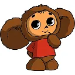

Чебура́шка — персонаж, придуманный писателем Эдуардом Успенским в 1966 году как один из главных героев книги «Крокодил Гена и его друзья» и её продолжений. После выхода мультфильма Романа Качанова «Крокодил Гена», снятого по этой книге в 1969 году, персонаж стал широко известен.
